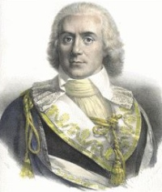

La Constitution de l'an III, adoptée en août 1795, met fin à la Convention nationale. Le 26 octobre, celle-ci s'auto-dissout. Le pouvoir exécutif est confié à un Directoire de cinq membres (Barras, Carnot, La Révellière-Lépeaux, Letourneur, puis Rewbell et autres), tandis que deux assemblées – le Conseil des Anciens et le Conseil des Cinq-Cents – exercent le pouvoir législatif. Cette architecture institutionnelle, conçue pour éviter à la fois la dictature et le retour de la monarchie, se révèle rapidement instable.
Sur le plan monétaire, la situation est catastrophique. Les assignats, multipliés sans mesure, ont perdu la quasi-totalité de leur valeur. En 1796, on tente de les remplacer par les mandats territoriaux, qui subissent le même sort et sont abandonnés dès 1797. La confiance dans le papier-monnaie est ruinée ; l'économie revient massivement au troc et aux espèces métalliques thésaurisées.
« Le franc devient l'unique unité monétaire de la France : il est divisé en cent centimes. » — Décret du 15 août 1795 (28 thermidor an III)
C'est dans ce contexte que le décret du 15 août 1795 pose les bases du système monétaire décimal moderne. Le franc, défini par un poids d'argent, devient l'unité de compte. Toutes les monnaies du Directoire sont désormais décimales : centimes, décimes, francs. La rupture avec le système duodécimal de l'Ancien Régime (livres, sols, deniers) est consommée.
La première grande pièce d'argent du nouveau système est la 5 francs Union et Force (type Hercule), frappée à partir du 9 janvier 1796 (an 4) à Paris. Les petites valeurs – 5 centimes, 1 et 2 décimes – voient le jour progressivement. Malgré les difficultés techniques et la pénurie de métal, ces monnaies fondent durablement le cadre monétaire français jusqu'à l'euro.
Politiquement, le Directoire s'enlise. Coups d'État parlementaires, guerres extérieures permanentes, corruption et impopularité minent le régime. Le 18 brumaire an VIII (9 novembre 1799), Bonaparte le renverse. Le Consulat lui succède, ouvrant la voie à l'Empire.
Sources : infonumis.info · catalogues Le Franc & Gadoury · Archives parlementaires
Les monnaies du Directoire
'" />2 Décimes Dupré
Date : An 4 A (Paris) ; 9.177.562 exemplaires (pour un total de fabrication de 16.377.141 ex. de l'An 4 à l'An 5)
Degré de rareté : R1
Cuivre ; 31 mm ; 19.92g (théorique 20g)
Tranche maclée
Avers : REPUBLIQUE FRANÇAISE ; tête de la République aux cheveux longs à gauche, drapée et coiffée d'un bonnet phrygien ; au-dessous Dupré * en cursif.
Revers : 2 / DÉCIMES. en deux lignes dans le champ, au-dessus du millésime suivi d'un point et de la lettre d'atelier encadrés des différents, dans une couronne fermée composée de deux branches de chêne nouées à leur base par un ruban.
Références : F.145 G.300 Malgré une frappe importante, surtout à Paris, les modifications et refrappes succéssives n'ont pas permis la "survie" d'un grand nombre d'exemplaires.
Décime, Petit module
Date : An 4 A (Paris) ; Degré de rareté : R1 ; 3.517.156 exemplaires (pour un total de fabrication de 4.554.903 ex. de l'An 4 à l'An 5)
Cuivre ; 28 mm ; 7.95g (théorique 10g)
Circulation : An 4 - An 5
Tranche cordonnée
Avers : REPUBLIQUE FRANÇAISE ; tête de la République aux cheveux longs à gauche, drapée et coiffée d'un bonnet phrygien ; au-dessous Dupré* en cursif.
Revers : DÉCIME . dans le champ, au-dessus du millésime suivi d'un point et de la lettre d'atelier encadrée des différents, dans une couronne fermée composée de deux branches de chêne opposées nouées à leur base par un ruban.
Références : F.126 G.184 Les frappes de Paris du DÉCIME petit module (moitié du poids théorique) n'ayant pas toutes été mises en circulation ainsi que les refrappes massives des exemplaires de retour dans les caisses publiques, n'ont la non plus pas permis la "survie" de beaucoup d'exemplaires. Cette pièce est aujourd'hui très recherchée et reste rare dans tous les états.
5 Centimes, Petit module
C'est ici la première apparition de la Liberté sur une monnaie. Cette femme au bonnet phrygien, de Dupré, devient le symbole national. Elle sera utilisée jusqu'a l'arrivée de Napoléon. Après une courte réapparition (dans l'urgence) de 1848 à 1851, elle sera remplacée par la Cérès d'Oudiné avant de revenir sous les traits de Dupuis et Chaplain, Patey... Date : An 4 A (Paris) ; 11.589.079 exemplaires (pour un total de fabrication de 13.088.670 ex. de l'An 4 à l'An 5)
Cuivre ; 23 mm ; 5.11g (théorique 5g)
Circulation : An 4 - An 5
Tranche cordonnée
Avers : REPUBLIQUE FRANÇAISE ∙ ; tête de la République aux cheveux longs à gauche, drapée et coiffée d'un bonnet phrygien ; au-dessous Dupré en cursif.
Revers : 5 / CENTIMES. en deux lignes dans le champ, au-dessus d'un trait séparatif, du millésime encadré des différents, suivi d'un point, et au-dessous la lettre d'atelier.
Références : F.113 G.124 Cette pièce n'est pas toujours parfaitement frappée mais est néanmoins d'une qualité bien supérieure aux types suivants.
Un Décime, Modification du 2 Décimes
Date : An 4 A (Paris)
Degré de rareté : R1
Cuivre ; 31 mm ; 19.98g (théorique 20g)
Circulation : An 4 - 1856
Tranche maclée
Avers : REPUBLIQUE FRANÇAISE ; tête de la République aux cheveux longs à gauche, drapée et coiffée d'un bonnet phrygien ; au-dessous Dupré * en cursif.
Revers : UN (poinçonné manuellement en creux) / DÉCIME (espace pour le S arasé) en deux lignes dans le champ, au-dessus du millésime suivi d'un point et de la lettre d'atelier encadrés des différents, dans une couronne fermée composée de deux branches de chêne nouées à leur base par un ruban.
Références : F.127 G.186
Un Décime, Grand module, "refrappage" du 2 Décimes
Date : An 5 A (Paris)
Bronze ; 32 mm ; 18.31g (théorique 20g)
Tranche maclée
Avers : REPUBLIQUE FRANÇAISE ; tête de la République aux cheveux longs à gauche, drapée et coiffée d'un bonnet phrygien ; au-dessous Dupré * en cursif.
Revers : UN / DÉCIME. en deux lignes dans le champ, au-dessus du millésime suivi d'un point et de la lettre d'atelier encadrés des différents, dans une couronne fermée composée de deux branches de chêne opposées nouées à leur base par un ruban.
Références : F.128 G.185
Cinq centimes, Grand module, "refrappage" du Décime
Date illisible ; Atelier illisible ; 1.917.679 exemplaires frappés de l'an 5 à l'an 8
Degré de rareté : R1
Cuivre ; 28 mm ; 8.42g (théorique 10g)
Tranche chevronnée
Avers : REPUBLIQUE FRANÇAISE ; tête de la République aux cheveux longs à gauche, drapée et coiffée d'un bonnet phrygien ; au-dessous Dupré * en cursif.
Revers : CINQ / CENTIMES. en deux lignes dans le champ, au-dessus du millésime suivi d'un point et de la lettre d'atelier encadrés des différents, dans une couronne fermée composée de deux branches de chêne opposées nouées à leur base par un ruban.
Références : F.114 G.125
Un Décime, Grand module
Date : An 7 W (Lille) ; 1.883.700 exemplaires (pour un total de fabrication de 97.732.094 ex. de l'An 5 à l'An 9)
Bronze ; 31 mm ; 20.50g (théorique 20g)
Circulation : An 5 - 1856
Tranche maclée
Avers : REPUBLIQUE FRANÇAISE ; tête de la République aux cheveux longs à gauche, drapée et coiffée d'un bonnet phrygien ; au-dessous Dupré * en cursif.
Revers : UN / DÉCIME. en deux lignes dans le champ, au-dessus du millésime suivi d'un point et de la lettre d'atelier encadrés des différents, dans une couronne fermée composée de deux branches de chêne nouées à leur base par un ruban.
Références : F.129 G.187
Cinq Centimes, Grand module
Date : An 7 A (Paris) ; 26.245.002 exemplaires (pour un total de fabrication de 139.693.784 ex. de l'An 5 à l'An 9)
Cuivre ; 28 mm ; 10.31g (théorique 10g)
Circulation : An 5 - 1856
Tranche chevronnée
Avers : REPUBLIQUE FRANÇAISE ; tête de la République aux cheveux longs à gauche, drapée et coiffée d'un bonnet phrygien ; au-dessous Dupré en cursif.
Revers : CINQ / CENTIMES . en deux lignes dans le champ, au-dessus d'un trait séparatif, du millésime suivi d'un point et de la lettre d'atelier encadrée des différents, dans une couronne fermée composée de deux branches de chêne nouées à leur base par un ruban.
Références : F.115 G.126
Un Centime
Date : An 6 A (Paris) ; 47.178.314 exemplaires (pour un total de fabrication de 100.083.259 ex. de l'An 6 à l'An 8)
Bronze ; 18 mm ; 1.76g (théorique 2g)
Circulation : An 6 - 1856
Tranche lisse
Avers : REPUBLIQUE FRANÇAISE ; tête de la République aux cheveux longs à gauche, drapée et coiffée d'un bonnet phrygien ; au-dessous Dupré en cursif encadré de points ; grènetis circulaire formé de points.
Revers : UN / CENTIME. en deux lignes dans le champ, au-dessus de l'AN (millésime), suivi d'un point, la lettre d'atelier sous le millésime ; grènetis circulaire formé de points.
Références : F.100 G.76
5 Francs UNION ET FORCE
Date : An 11 A (Paris) ; 1.557.551 ex. (pour un total de fabrication de 21.246.225 exemplaires de l'An 4 à l'An 11)
Argent 900 ‰ ; 37 mm ; 25.02g (théorique 25g)
Tranche : GARANTIE NATIONALE
Avers : UNION ET FORCE . * ; Hercule barbu demi-nu, debout de face avec la léonté, sur son épaule gauche une patte de lion, sur son bras et autour de la taille la peau du lion de Némée, derrière ses jambes queue et pattes du lion, unissant la Liberté debout à gauche tournée à droite, tenant une pique surmontée d'un bonnet phrygien, vêtue d'un peplos et l'Egalité debout à droite tournée à gauche, tenant le niveau, vêtue d'un chiton ; à l'exergue Dupré signé en cursif entre deux points, légende serrée.
Revers : RÉPUBLIQUE FRANÇAISE * ; 5 / FRANCS., en deux lignes ; au-dessous un trait séparatif et l'AN (millésime)., le tout contenu dans une couronne composée à gauche d'une branche de laurier, à droite d'une branche de chêne avec grande feuille finale (deux glands intérieurs sur le haut de la branche de droite, sans gland à l'extérieur sur le bas de cette branche), nouées à leur base par un ruban ; au-dessous la lettre d'atelier entre deux points.
Références : F.300 G.563a